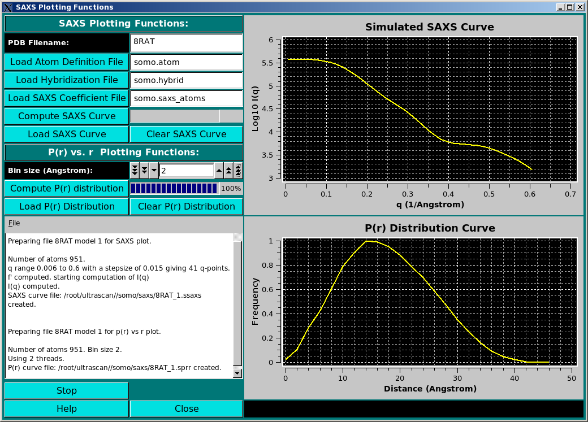

| |
Manual |

Small-Angle X-ray Scattering (SAXS) and P(r) vs r curves from either a PDB file or a bead model can be generated by this new module, currently under construction.
This part of the US-SOMO Manual is presently under construction.
This document is part of the UltraScan Software Documentation
distribution.
Copyright © notice.
The latest version of this document can always be found at:
http://www.ultrascan.uthscsa.edu
Last modified on September 4, 2009.